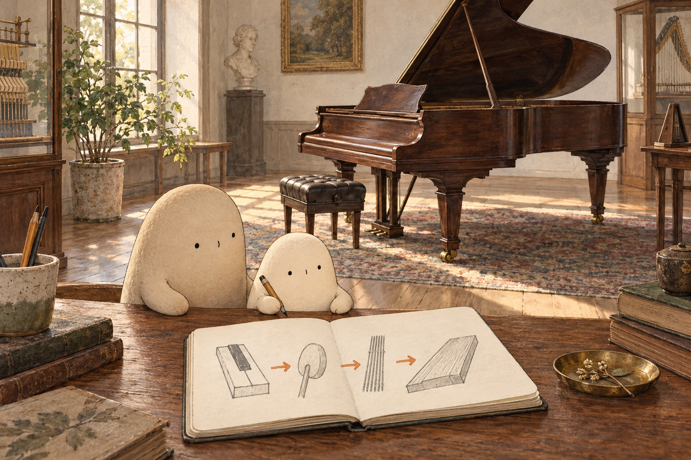

The note inside
The note inside. · Curiosity day

One key sinks beneath Little's hand. A note rings through the museum. “Was it hiding in there?” Little asks. Big listens beside the bench. The key hardly moved. Something inside the piano must have done much more.

An enormous model gives them a peek. A key tips; connected parts lift a felt-covered hammer. Tap! The hammer strikes a string and comes away. “A tiny hammer?” Little whispers. This team of moving parts is called the action — the key's small press becomes a tap.

The hammer has fallen back, but the string is not still. It quivers: back and forth, back and forth. That quick motion is vibration. “The tap is over,” Little says, “but the moving isn't!” How can such a thin string sound so big?

Little follows the same string to a wooden bridge. The bridge carries vibration into a broad soundboard. That wood vibrates too, moving more air. The air carries sound to listening ears. “The wood joins in!” Little says. A thin string has a roomy helper.

Two strings stretch across another model. One is longer. If everything else stays the same, the longer string vibrates more slowly and sounds lower. The shorter one sounds higher. “Different voices!” says Little. How high or low a note sounds is its pitch.

With the pedal up, Little releases a middle key. A felt damper hushes its strings. Little sketches key, hammer, strings, wood. “The note wasn't hiding. We set things moving!” Big leaves room for one more why.
Think about it: What did Little first guess about the note? Which moving parts helped change that guess? How does vibration get from a string to the air? Name the two wooden helpers.